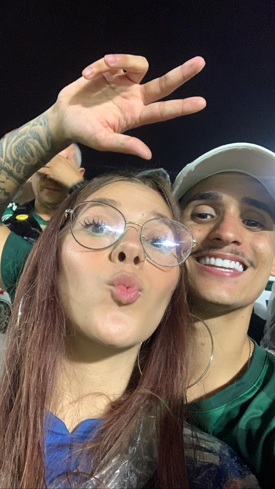
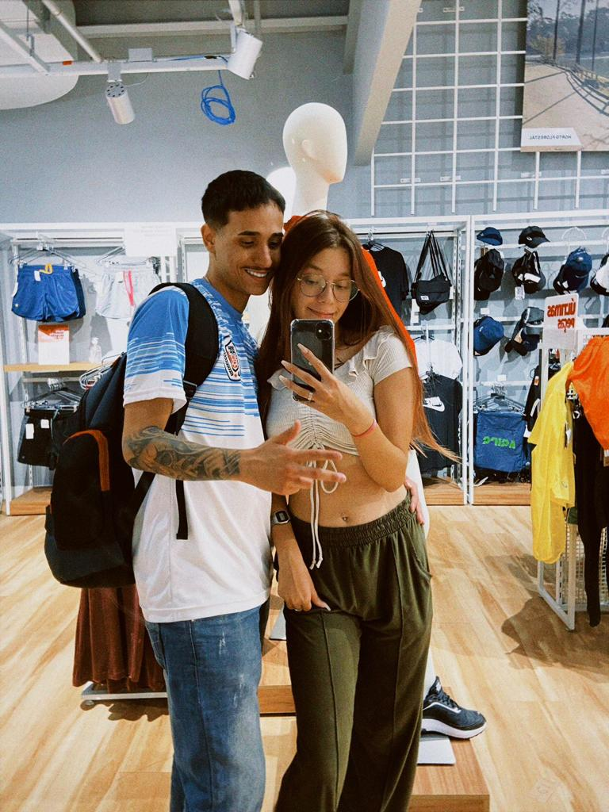
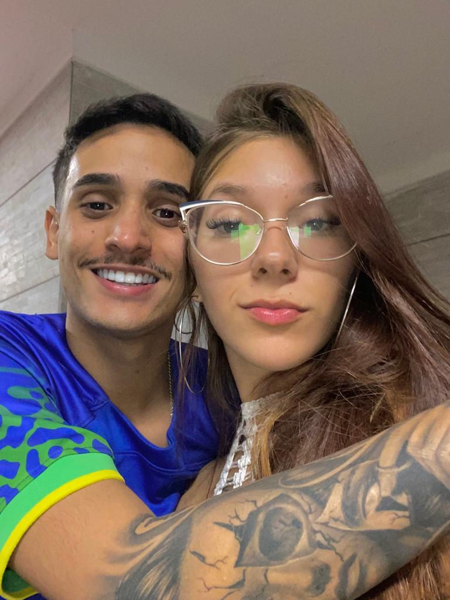

06 de Outubro de 2022
Melhor dia da Minha Vida!
Eu nunca vou esquecer desse dia, lembro de cada detalhe como se fosse
recente. O frio na barriga, comprar a aliança de última hora, sem nem
saber o tamanho do seu dedo, combinar com meu amigo para gravar o
pedido.Tudo aconteceu do jeito que eu imaginei, mesmo sem planejar
nada direito, foi o momento mais sincero e espontâneo da minha vida,
mas isso resume bem, por que te amar é a coisa mais sincera e
espontânea que eu faço.
04 de Fevereiro de 2023
Somos Porco Muito Louco

O Palmeiras sempre foi minha vida, minha razão de viver, nunca
imaginei que chegaria alguém com o mesmo coração verde, branco e
vermelho. O amor que eu sinto por um transborda para o outro, não tem
preço ter você incluída na parte mais importante da minha vida que é o
Palmeiras. Todo amor que eu sinto por vocês, eu vou passar pro meu
filho(a).
27 de Agosto de 2022
Minha Maluquinha
Eu e você não somos normais, por isso combinamos tanto, um completa a
loucura do outro, mesmo você passando dos limites as vezes, sempre vou
estar do seu lado nas suas maluquices, o que me faz te amar cada vez
mais, é o fato de você ser você mesma, sem filtros, espontânea, é a
melhor pessoa que eu já conheci.
15 de Dezembro de 2022
Pedras no Caminho

Vamos enfrentar muitas dificuldades no nosso caminho, nós já passamos
por algumas e estamos firmes ainda, é assim que temos que continuar,
vamos por nosso orgulho de lado, vamos pedir desculpa, vamos ignorar
quem tem razão em brigas bobas, vamos fazer cada segundo valer a pena.
Essa foto é muito especial, tivemos um empecilho nesse dia, estava
indo de mal a pior, porém encontramos uma solução e tivemos um dia
mágico. Nunca desistir, sempre lutar, um pelo outro eternamente!
08 de Abril de 2023
Eu te AMO!

Quero que fique claro que independente do que aconteça, você sempre
vai ser o amor da minha vida. Eu me apaixono por você todos os dias,
todas as horas, todos os minutos e todos os segundos. O seu sorriso é
o que mais me faz feliz, a sua felicidade é a minha. O seu beijo é meu
vício predileto, e não pretendo fazer reabilitação. Enquanto eu tiver
você, tenho tudo, enquanto estivermos juntos, seremos tudo que
precisamos. EU TE AMO! ❤️❤️❤️❤️❤️❤️❤️